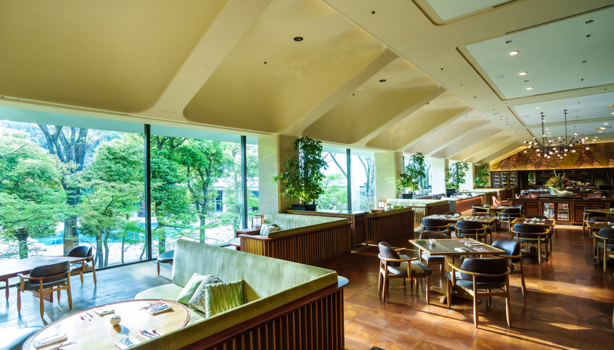
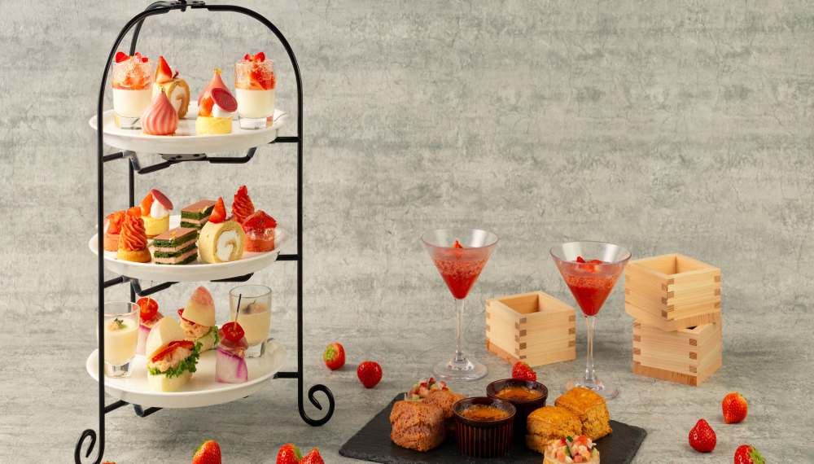
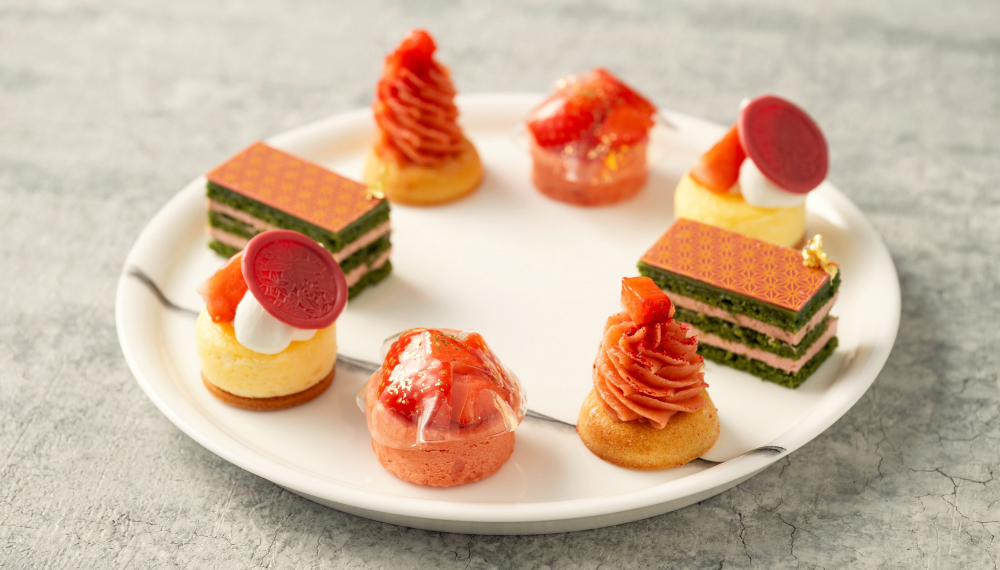

風流な月待ち体験
「高輪廿六夜（たかなわにじゅうろくや）」
- 
- 
- 
江戸時代、見晴らしのよい高輪では、多くの人が集まり月の出を待ちながら、屋台での飲食を粋に愉しんでいました。「二十六夜待ち」と呼ばれ、複数の風景画に当時の様子が残されています。400個以上もの竹あかりに包まれた別世界の中、月待ちチェアに腰かけて月を見上げる神秘的な体験「高輪廿六夜（たかなわにじゅうろくや）」をお楽しみください。
氷と光の祭典

この冬、幻想的に灯る高輪廿六夜の竹あかりと、「光のモビール」と呼ばれるフィンランドの伝統工芸「ヒンメリ」を組み合わせたフォトスポットが日本庭園に登場。また、日付限定で当ホテルのアイスカービング職人たちが創る迫力ある氷彫刻も披露します。光と氷のコラボレーションをお楽しみください。
時とともに表情を変えるラウンジで楽しむ
季節のアフタヌーンティー


大きな窓から差し込む、やわらかな陽の光と緑に包まれて、時間を忘れて過ごすひととき。1月10日からは甘酸っぱい旬のいちごと和食材のコラボレーションを楽しむアフタヌーンティーをご堪能いただけます。
ドッグフレンドリールーム


ワンちゃん同伴のお客さま専用客室『ドッグフレンドリールーム』では、気兼ねなくワンちゃんと一緒にお過ごしいただけます。ホテル併設のドッグクロークや屋内ドッグランがワンちゃんとの滞在を充実したものに。宿泊時にフロントでもらえるお散歩マップを片手に、爽やかな朝のお散歩もおすすめです。
ライブキッチンで作る、
あなただけのオリジナル朝食。


ブッフェ＆カフェ スロープサイドダイナーザクロでは、和洋が調和したコンテンポラリージャパニーズがテーマの上質な空間でご朝食をお楽しみいただけます。
ふんわりオムレツをカレーにディップしたり、数十種類のトッピングの中からお茶漬けに合う最高の組み合わせを選んだり、自分だけの特別な一皿をご堪能ください。
1度で2度おいしいラウンジホッピング


クラブフロアに宿泊することで、高輪エリアにある２つのプリンスホテルのラウンジを自由にご利用いただけます。ドリンクや軽食は時間帯によって異なるものをご用意。ラウンジを巡りながら庭園の四季折々の表情を楽しむ、心地よい上質な時間をお過ごしください。